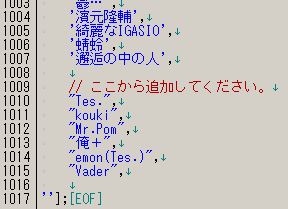

[トップページに戻る]
[放送主向け文書に戻る]
Ｐ名リストをみんなで共有・改訂するための方法などを解説します。2011.02.12 改訂
リスナーに情報を提供するのが第一の目的ですが、またＰさんに謝意を示すことも目的のひとつです。
ボカロ系生放送では、Ｐさんたちが大変な苦労をして作った曲を無許可で勝手に借りて流しています。
少しでも感謝しリスペクトを示すためにも、放送中にＰ名をきっちり表示するのが、せめてものマナーでしょう。
主セレの曲は放送前に調べることもできますので、仮にＰさんご本人が放送を見ていても失礼のないようにしたいものです。
とはいえ、少なくとも現在のミクノではＰ名を表示することは義務ではありません。
ニコニコ動画の仕様として、「動画の制作者」というメタデータを格納する仕組みが用意されていません。
そのため、動画の制作者をプログラムが知るには、他の情報を参照する必要があります。
実質的に使えるデータは動画の「タグ」ですが、「どのタグがＰ名に相当するのか」は人間が
ソフトに教えてやる必要があります。それがＰ名リストと呼ばれるものです。
よって、もし手元のＰ名リストに名前があっても、そもそも元動画にタグがなければ何も表示されません。
ちなみに、昔はそれぞれの主が独自に手元のＰ名リストを改訂していました。
ME を配布している理由の１つが、みんなのこの手間を減らすことにあります。
ニコニコ動画でのＰ名の定義は「投稿作品の作者名」ですが、ボカロ界では一般に「楽曲の制作者」です。
決まった定義はありませんが、通常は作曲者を指します（作詞や編曲アレンジは含みません）。
また、ミクノを含むボカロ系生放送では楽曲の紹介という側面が強いため、
作詞者・絵師・動画師・動画を代理でアップしたひと等の名前はＰ名として採用しないのが普通です。
ニコリク等のツールは、名前のうしろに「〜P」とついているタグがあれば自動的にＰ名として表示します。
よって、必要になるのは「最後がPで終わらないP名」です。
ME をインストールしたディレクトリに、pnames.js というファイルがあります。
これをメモ帳や TeraPad などのソフトで開いて編集できます。
書式はファイルの中を参考に、ファイル末尾に追加していってください。

追記したあと反映するには、ME の再起動が必要です。
「Ｐ名/?」が表示される場合、いくつかの理由があります。
１．新人Ｐさんなので、まだＰ名リストに名前がない
タグ職人さんやファンのひとたちがいつか埋めてくれるのを気長に待ちましょう。
あるいは、自分でタグをセットするのもよいでしょう（後述）。
２．動画のどこにもＰ名らしきものが見当たらず、タグ職人がタグをつけていない
最近は「投稿者プロフィール」が強制的に表示されるようになったので、
昔のように全く情報がない、ということはなく、このケースは少ないようです。
３．人気動画や荒らされている動画で、タグがあったりなかったりする
ミクノで流れる曲にはめったにありませんが。
４．Ｐ名の表記が安定しない
たとえば、「Rin」や「ぎん」だったものが「Rin(ぎん)」となっていたりするケースです。
おおざっぱな指針です。
既出かどうかはチェックする必要ありません、いくら重複していても大丈夫です。
見つけたらガンガン追加していってください。
ニコリク等のツールはＰ名を「タグから」引っ張ってきて、手元のＰ名リストとマッチングします。
うｐ主コメント文中の作曲者名等をコピーするのではなく、最終的には必ず「タグをコピー」してください。
大文字小文字や全角半角は区別されませんが、できるだけタグをそのままコピーしてください。
Ｐ名かどうか怪しい場合は、とりあえずスルーしておいてください。あるいは、放送中にリスナーに聞いてみるといいかもしれません。
ある程度まとまったタイミングで、あなたの pnames.js をそのまま私までお送り下さい。メールやスカイプが使えます。
ただし、ME を上書きインストールすると、pnames.js も上書きされてしまいますので、必要ならご自分でバックアップをお願いします。
私の場合は、saihane.js という名前にとりあえず書いておいて、pnames.js にまとめてコピペする方法を採っています
ニコリクは「〜P」で終わるタグをＰ名だと見なしますが、その中にはＰ名ではないものがあります。
例えば、MikuPOP 2STEP などがそうです。
いわゆる「除外Ｐネーム」と呼ばれているものですが、これらもまた明示的に指定する必要があります。
もしＰ名ではないものが表示されていたら、教えてください。
一般的なニコリクでは settings.js の中に、ME 1.47 以降では pnames_ex.js というファイルに書いてあります。
ニコヘルのＰ名ホワイトリスト用に、テキストファイルを用意しています。
最新版は次のアドレスにあります。ME に同梱されるものと同一です。
もしブラウザで見て文字化けしているときは、ブラウザのメニューから「表示」→「文字コード」→「 日本語（Shift_JIS）」等を
選んでみてください。（ブラウザの種類によって多少表記が違うかもしれません）
http://github.com/ryochin/nicoreq_mikunopop/raw/master/pnames/pnames.txt
創作物ではないので著作権は発生しません。他のソフトへの流用はご自由にどうぞ。
Ｐ名リストは、みんなで育てるミクノコミュの財産です。よろしくお願いします。
これまでにリストを提供して頂いた方たちです（敬称略）。
[トップページに戻る]
[放送主向け文書に戻る]